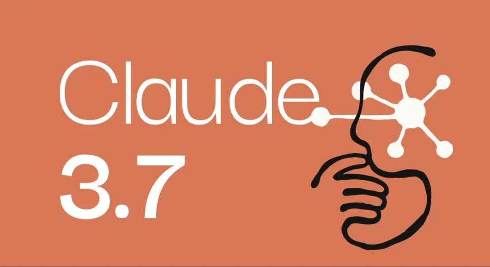

2025年2月24日，Anthropic公司正式发布了Claude 3.7 Sonnet，这款被誉为"AI史上首个真正的混合推理引擎"的模型在AI领域引起了巨大轰动。Claude 3.7不仅在编程能力上实现了质的飞跃，更引入了革命性的"Extended Thinking"扩展思维模式，为复杂问题解决提供了前所未有的透明度。
首个将快速思考和深度思考融合在单一模型中的AI，能够根据任务复杂度自动切换思考模式。
能够透明展示详细推理过程，适合复杂问题解决，让用户理解AI的思考路径。
在SWE-bench Verified测试中达到行业领先的70.3%，代码理解和生成能力大幅提升。
强化了图像处理和视觉分析能力，能够更好地理解和处理视觉内容。
支持多达128K令牌的输出，是之前模型的15倍以上，适合长文档生成。
用户可以控制模型思考的深度和资源分配，在速度、成本和性能之间灵活平衡。
最新实测数据显示
Claude 3.7在编程和推理测试中分别获得9.7/10和9.8/10的超高分，已全面超越同期所有AI模型。尤其在复杂代码理解、重构和调试方面，表现出色，成为目前最强大的编程辅助AI之一。